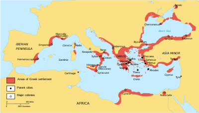
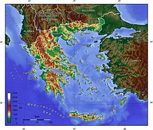
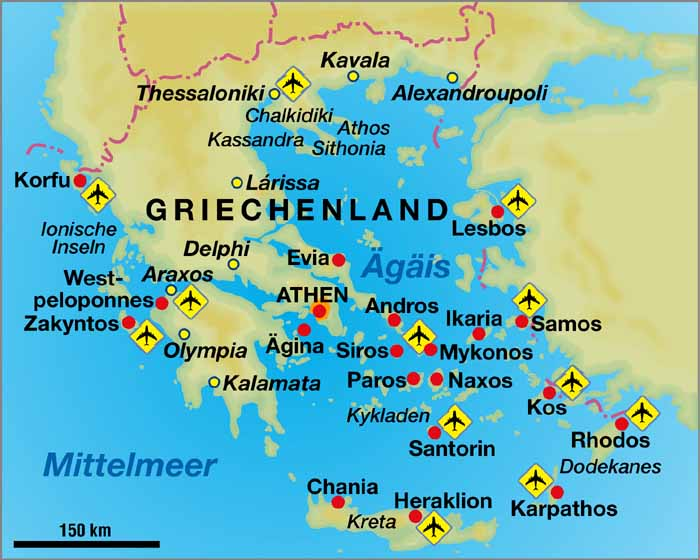
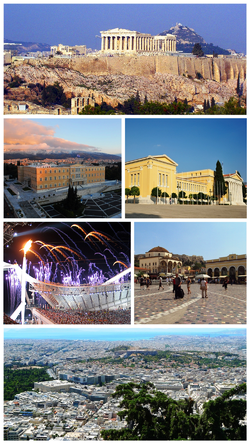
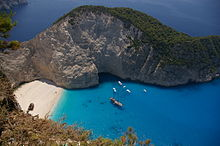
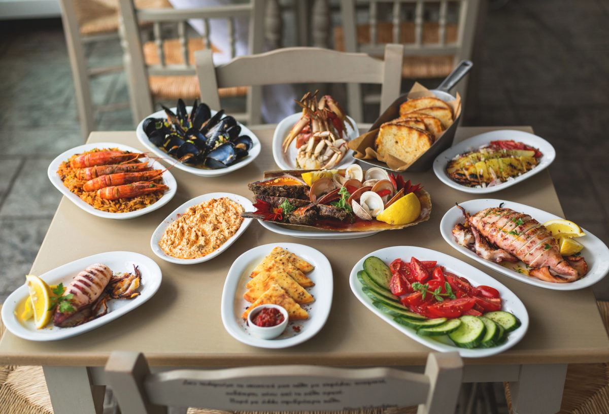
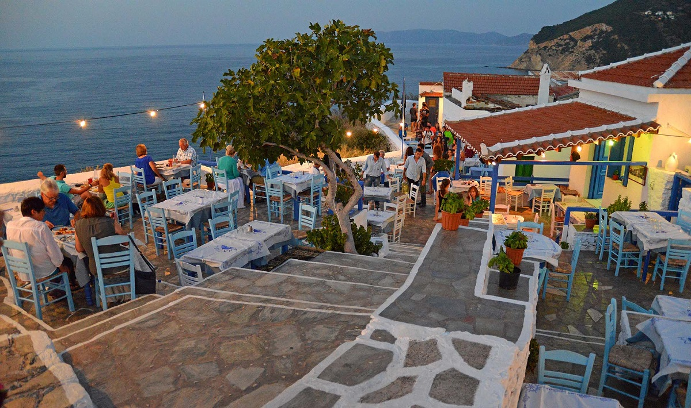

Grecia oficial, Republica Elenă și cunoscută încă din antichitate și sub denumirea de Elada, este o țară din Europa de Sud.[10] Conform recensământului din 2011, populația Greciei este de circa 11 milioane de locuitori. Cel mai mare oraș și capitala țării este Atena.
Grecia se află amplasată strategic la intersecția între Europa, Asia de Vest și Africa, și se învecinează la nord-vest cu Albania, la nord cu Macedonia de Nord și cu Bulgaria, și la nord-est cu Turcia. Țara este formată din nouă regiuni istorico-geografice: Macedonia, Grecia Centrală, Pelopones, Tesalia, Epir, Insulele din Marea Egee(en) (inclusiv Dodecanezele și Cicladele), Tracia de Vest(en), Creta și Insulele din Marea Ionică. Marea Egee se află la est de partea continentală, Marea Ionică se află la vest, iar Marea Mediterană la sud. Grecia are cea mai lungă coastă din bazinul Mediteranei și a 11-a ca lungime din lume, cu 13.676 km lungime, deținând și un mare număr de insule (aproximativ 1.400, dintre care 227 sunt locuite). Optzeci la sută din teritoriul grec este format din munți, dintre care cel mai înalt este Muntele Olimp cu 2.917 m.
Cea mai veche urmă de prezență umană în Balcani, datând de circa 270.000 de ani, se găsește în peștera Petralona, din provincia grecească actuală Macedonia. Așezările neolitice din Grecia, datând din mileniul al VII-lea î.Hr., sunt printre cele mai vechi din Europa, țara aflându-se pe ruta pe care s-a răspândit revoluția agrară din Orientul Apropiat în Europa.
Grecia este leagănul primelor civilizații europene avansate și locul unde s-a născut civilizația occidentală, începând cu civilizația cicladică din insulele din Marea Egee pe la 3200 î.Hr., civilizația minoică din Creta (2700–1500 î.Hr.), și apoi civilizația miceniană pe continent (1900–1100 î.Hr.). Aceste civilizații cunoșteau scrisul, forma indescifrabilă de scriere a civilizației minoice fiind denumită Linear A, iar cea a micenienilor, Linear B, o veche formă a limbii grecești. Micenienii i-au asimilat și absorbit treptat pe minoici, dar și civilizația lor s-a prăbușit violent prin preajma lui 1200 î.Hr., într-o vreme de agitație regională denumită Colapsul din Epoca Bronzului(en). Aceasta a adus o perioadă denumită Epoca Întunecată, din care lipsesc mărturiile scrise.
Sfârșitul Epocii Întunecate este datat prin tradiție la anul 776 î.Hr., anul primelor Jocuri Olimpice. Iliada și Odiseea, textele fundamentale ale literaturii occidentale, sunt considerate a fi fost compuse de Homer în secolele al VIII-lea–al VII-lea î.Hr..[34][35] Odată cu sfârșitul Epocii Întunecate, au apărut diferite regate și orașe-stat în toată peninsula greacă, care s-au răspândit până la țărmurile Mării Negre, Italia de Sud (în latină Magna Graecia, sau Grecia Mare) și Asia Mică. Aceste state și coloniile lor au atins niveluri înalte de prosperitate, care au avut ca efect o explozie culturală fără precedent, cea a Greciei clasice, exprimată prin arhitectură(en), teatru, știință, matematică și filosofie. În 508 î.Hr., Clistene a instituit primul sistem democratic de guvernare în Atena.
Teritorii și colonii grecești în Perioada Arhaică (750-550 î.Hr.)
După asasinarea lui Filip al II-lea, fiul său, Alexandru al III-lea cel Mare a preluat conducerea Ligii de la Corint și a declanșat o invazie a Imperiului Persan cu forțele combinate ale tuturor orașelor-stat grecești în 334 î.Hr. După victoriile grecilor în bătăliile de la Granicus, Issus și Gaugamela, grecii au ocupat Susa și Persepolis, capitala ceremonială a Persiei, în 330 î.Hr. Imperiul lui Alexandru cel Mare se întindea din Grecia în vest până în actualul Pakistan în est, și până în Egipt în sud.
Grecia este formată dintr-o parte continentală muntoasă și peninsulară, întinzându-se în mare în capătul sudic al Peninsulei Balcanice, terminându-se cu peninsula Pelopones (separată de restul continentului printr-un canal prin Istmul Corintului(en)). Datorită coastei deosebit de complexe și datorită numeroaselor insule, Grecia are a unsprezecea cea mai lungă coastă din lume, cu 13.676 km;[79] frontiera sa terestră este de doar 1.160 km. Țara se află aproximativ între paralelele de 34° și 42° latitudine nordică, și între meridianele de 19° și 30° longitudine estică.
Optzeci la sută din teritoriul Greciei este format din munți și dealuri, ceea ce face țara să fie una dintre cele mai muntoase din Europa. Muntele Olimp, sălașul mitic al zeilor greci, culminează cu vârful Mytikas 2.917 m, cel mai înalt din țară. Grecia vestică are mai multe lacuri și zone umede și este dominată de Munții Pindului. O continuare a Alpilor Dinarici, acest lanț atinge o altitudine maximă de 2.637 m în vârful Smolikas(en) (al doilea din Grecia), și de-a lungul istoriei a constituit o importantă barieră împotriva transportului dintre est și vest.
Insulele grecești sunt grupate prin tradiție în următoarele arhipelaguri: Insulele Argo-Saronice(en) din Golful Saronic de lângă Atena, Cicladele, o colecție mare dar densă ce ocupă partea centrală a Mării Egee, Insulele Egeene de Nord(en), o grupare aproximativă aflată în largul coastei vestice a Turciei, Dodecanezele, o altă mulțime vagă de insule din sud-est, aflate între Creta și Turcia, Sporadele, un grup mic și compact în largul coastei Euboeei de nord-est, Insulele Ionice, aflate la vest de continent în Marea Ionică.
Clima Greciei este în principal mediteraneană cu ierni blânde și umede și cu veri uscate și călduroase. Acest tip de climă este prezent în toate zonele de coastă, inclusiv în Atena, în Ciclade, Dodocaneze, Creta și Pelopones, în Insulele Ionice și în unele părți din Grecia continentală centrală. Munții Pindului afectează puternic clima din țară, zonele de la vest de munți fiind considerabil mai umede în medie (din cauza expunerii mai mari la vânturile de vest care aduc umezeală) decât cele aflate la est de munți (din cauza unui efect de umbră pluviometrică(en)).
Atena este capitala Greciei. Atena a cunoscut o evoluție glorioasă, mai ales în Grecia Antică, fiind locuită de oameni încă din Epoca Bronzului și guvernată până în jurul anului 1000 î.Hr. de regi ionieni.Atena domină regiunea Attica și este unul dintre cele mai vechi orașe din lume, istoria sa atestată durând peste 3,400 de ani iar cea mai timpurie prezență umană a fost între mileniile 11 și 7 î.e.n.
Atena se întinde de-a lungul Câmpiei centrale din regiunea Attica, cunoscut și ca un bazin. Este înconjurată de Muntele Aegaleo în vest, Muntele Parnitha în nord și nord-est, Muntele Penteli Hymettos la est și de Golful Saronic în sud-vest. Atenei îi este dificil să se extindă în continuare din cauza barierelor geografice menționate mai sus, deși suburbiile metropolei sunt în expansiune continuă. Capitala este străbătută de către râul Kifissos care mai apoi se varsă în Golful Salonic și Faliro. Solul este stâncos și nu este foarte fertil, dealurile sunt din mase de calcar.
Grecia a fost o atracție turistică încă din antichitate, pentru istoria sa bogată, precum și pentru litoralul lung, cu multe insule și plaje. Grecia a atras 26,5 milioane de vizitatori în 2015 și se estimează că va atrage 30 de milioane de turiști în 2016. Turismul contribuie cu 18% la Produsul Intern Brut. Capitala Atena, precum și Santorini, Mykonos, Rodos, Corfu și Creta, reprezintă unele din cele mai importante destinații turistice.
Fiind o țară dezvoltată dependentă de turism, Grecia oferă o gamă largă de facilități turistice. Infrastructura turistică a Greciei a fost mult îmbunătățită de la Jocurile Olimpice din Atena 2004 și continuă să se extindă cu o serie de proiecte importante
Bucătăria grecească are o tradiţie de peste 4000 de ani, iar în 330 î.H., Archestratos a scris prima carte de bucate din istoria omenirii. Începuturile ei se pierd în vremurile mitologice, când zeii din Olimp coborau printre muritori. Este o bucătărie tipic mediteraneană, cu elemente comune bucătăriilor italiană, balcanice şi orientale.
Unele mâncăruri îşi trag rădăcinile din vechea Grecie clasică: skordalia (un piure gros preparat din cartofi, nuci, migdale, usturoi şi ulei de măsline), supa de linte, retsina (vin alb, sau rosé, sigilat cu răşină de pin) şi pasteli (desert din seminţe de susan şi miere). Altele provin din perioada elenistică şi romană: loukaniko (cârnaţi de porc uscaţi), sau bizantină: brânza feta, avgotaraho (icre sărate) şi paximadhi (pâine tare, preparată din porumb, orz şi secară).
Tavernele greceşti sunt o adevărată „instituţie” în Grecia, ce oferă un farmec aparte şi creează o atmosferă familială şi plină de viaţă! Ele sunt definitorii pentru mâncarea grecească tradiţională, la preţuri accesibile. Mâncarea delicioasă, serviciul atent şi grija pentru detalii, plus personalitatea distinctă şi bine conturată, sunt atuurile acestora.
